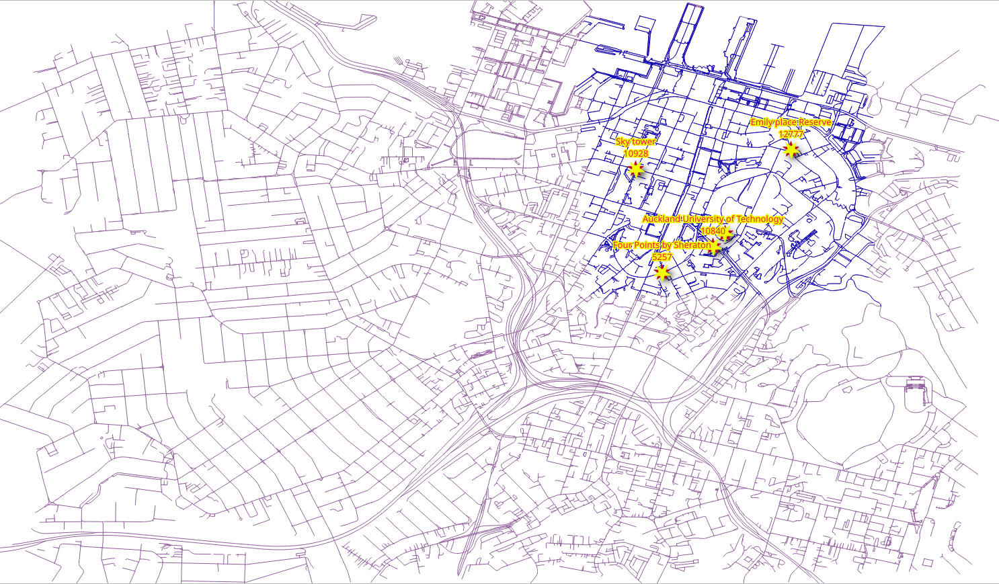

2. Graphs¶
{kind=link}
Diferentes aplicaciones requieren diferentes gráficos. En este capítulo se explica cómo descartar segmentos desconectados y los distintos métodos para crear gráficos.
pgRouting functions in this chapter
2.1. Requisitos del grafo¶
In this chapter there are three graph requirements. It consists on three graphs
based on a fully connected graph derived from ways: two for different types
of vehicles and one for pedestrian, the source and the target in all of them are
based on the source and target.
La descripción de los grafos:
Vehículo particular:
Circulate on the whole Auckland area.
Do not use pedestrian, steps, footway, path, cycleway
La velocidad es la velocidad predeterminada de la información de OSM.
Vehículo Taxi:
Circula en un área más pequeña:
Bounding box:
(174.775,-36.855,174.76,-36.84)Do not use pedestrian, steps, footway, path, cycleway
La velocidad es 10% inferior a la de los vehículos particulares.
Peatones:
Walk on the whole Auckland area.
Can only use pedestrian only ways:
pedestrian, steps, footway, path, cycleway
The walking speed is
2 mts/sec.
2.2. Configuration from osm2pgrouting¶
When dealing with data, being aware of what kind of data is being used can improve results.
Vehicles can not circulate on pedestrian ways

Penalizing or removal of pedestrian ways will make the results closer to reality.
When converting data from OSM format using the osm2pgrouting tool, there is an
additional table: configuration.
The configuration table structure can be obtained with the following command.
\dS+ configuration
Table "public.configuration"
Column | Type | Collation | Nullable | Default | Storage | Compression | Stats target | Description
-------------------+------------------+-----------+----------+-------------------------------------------+----------+-------------+--------------+-------------
id | integer | | not null | nextval('configuration_id_seq'::regclass) | plain | | |
tag_id | integer | | | | plain | | |
tag_key | text | | | | extended | | |
tag_value | text | | | | extended | | |
priority | double precision | | | | plain | | |
maxspeed | double precision | | | | plain | | |
maxspeed_forward | double precision | | | | plain | | |
maxspeed_backward | double precision | | | | plain | | |
force | character(1) | | | | extended | | |
Indexes:
"configuration_pkey" PRIMARY KEY, btree (id)
"configuration_tag_id_key" UNIQUE CONSTRAINT, btree (tag_id)
Referenced by:
TABLE "ways" CONSTRAINT "ways_tag_id_fkey" FOREIGN KEY (tag_id) REFERENCES configuration(tag_id)
Access method: heap
Options: autovacuum_enabled=false
{kind=link}
In the image above there is a detail of the tag_id of the roads.
The OSM highway types:
SELECT tag_id, tag_key, tag_value
FROM configuration
ORDER BY tag_id;
tag_id | tag_key | tag_value
--------+-----------+-------------------
100 | highway | road
101 | highway | motorway
102 | highway | motorway_link
103 | highway | motorway_junction
104 | highway | trunk
105 | highway | trunk_link
106 | highway | primary
107 | highway | primary_link
108 | highway | secondary
109 | highway | tertiary
110 | highway | residential
111 | highway | living_street
112 | highway | service
113 | highway | track
114 | highway | pedestrian
115 | highway | services
116 | highway | bus_guideway
117 | highway | path
118 | highway | cycleway
119 | highway | footway
120 | highway | bridleway
121 | highway | byway
122 | highway | steps
123 | highway | unclassified
124 | highway | secondary_link
125 | highway | tertiary_link
201 | cycleway | lane
202 | cycleway | track
203 | cycleway | opposite_lane
204 | cycleway | opposite
301 | tracktype | grade1
302 | tracktype | grade2
303 | tracktype | grade3
304 | tracktype | grade4
305 | tracktype | grade5
401 | junction | roundabout
(36 rows)
Also, on the ways table there is a column that can be used to JOIN with the configuration table.
The configuration types in the Auckland data
SELECT distinct tag_id, tag_key, tag_value
FROM ways JOIN configuration USING (tag_id)
ORDER BY tag_id;
tag_id | tag_key | tag_value
--------+----------+----------------
101 | highway | motorway
102 | highway | motorway_link
104 | highway | trunk
105 | highway | trunk_link
106 | highway | primary
107 | highway | primary_link
108 | highway | secondary
109 | highway | tertiary
110 | highway | residential
111 | highway | living_street
112 | highway | service
113 | highway | track
114 | highway | pedestrian
115 | highway | services
117 | highway | path
118 | highway | cycleway
119 | highway | footway
122 | highway | steps
123 | highway | unclassified
124 | highway | secondary_link
125 | highway | tertiary_link
201 | cycleway | lane
202 | cycleway | track
(23 rows)
2.3. pgr_extractVertices¶
pgr_extractVertices extracting the vertex information of the set of edges of
a graph.
Resumen de la firma
pgr_extractVertices(Edges SQL, [dryrun])
RETURNS SETOF (id, in_edges, out_edges, x, y, geom)
OR EMPTY SET
Description of the function can be found in pgr_extractVertices
2.3.1. Ejercicio 1: Crear una tabla de vértices¶
Problema
Crea la tabla de vértices correspondiente a las aristas en ways.
Solución
Un grafo está formado por un conjunto de vértices y un conjunto de aristas.
En este caso, la tabla
wayses un conjunto de aristas.Para poder hacer uso de todas las funciones sobre grafos de pgRouting, es necesario tener definido el conjunto de vértices.
From the requirements, a fully connected graph is needed, therefore adding a
componentcolumn.
SELECT id, in_edges, out_edges, x, y, NULL::BIGINT osm_id, NULL::BIGINT component, geom
INTO vertices
FROM pgr_extractVertices(
'SELECT gid AS id, source, target
FROM ways ORDER BY id');
SELECT 25692
Revisando de la descripción de la tabla de vértices
\dS+ vertices
Table "public.vertices"
Column | Type | Collation | Nullable | Default | Storage | Compression | Stats target | Description
-----------+------------------+-----------+----------+---------+----------+-------------+--------------+-------------
id | bigint | | | | plain | | |
in_edges | bigint[] | | | | extended | | |
out_edges | bigint[] | | | | extended | | |
x | double precision | | | | plain | | |
y | double precision | | | | plain | | |
osm_id | bigint | | | | plain | | |
component | bigint | | | | plain | | |
geom | geometry | | | | main | | |
Access method: heap
Inspeccionando la información de la tabla de vértices
SELECT * FROM vertices Limit 10;
id | in_edges | out_edges | x | y | osm_id | component | geom
-------+---------------+-------------+---+---+--------+-----------+------
1269 | {1611} | {604} | | | | |
4790 | {5404,15924} | {110,28086} | | | | |
6396 | {7059} | {384,7058} | | | | |
8336 | {9210} | {429} | | | | |
51 | {69,70} | {71,10294} | | | | |
13527 | {14259,19725} | {936,30377} | | | | |
758 | {1008} | {718,6787} | | | | |
13520 | {14252,17115} | {921,30368} | | | | |
4326 | {4925,15893} | {466,30909} | | | | |
5337 | {5970} | {193} | | | | |
(10 rows)
2.3.2. Ejercicio 2: Llenar las otras columnas de la tabla de vértices¶
Problema
Llena la información de geometría en la tabla de vértices.
Solución
Contar el número de filas que hay que rellenar.
SELECT count(*) FROM vertices WHERE geom IS NULL;
count
-------
25692
(1 row)
Update the geom and osm_id columns
The update based on the
sourcecolumn fromwaystable and theidcolumn of the vertices table.To update
geomcolumn, use the start point of the geometry on thewaystable.Use the
source_osmvalue to fill uposm_idcolumn.
UPDATE vertices SET (geom, osm_id) = (ST_startPoint(the_geom), source_osm)
FROM ways WHERE source = id;
Verification
UPDATE 23843
Not expecting to be done due to the fact that some vertices are dead ends.
SELECT count(*) FROM vertices WHERE geom IS NULL;
count
-------
1849
(1 row)
Continue update the geom and osm_id columns
The update based on the
targetcolumn fromwaystable and theidcolumn of the vertices table.To update
geomcolumn, use the end point of the geometry on thewaystable.Use the
target_osmvalue to fill uposm_idcolumn.
UPDATE vertices SET (geom, osm_id) = (ST_endPoint(the_geom), target_osm)
FROM ways WHERE geom IS NULL AND target = id;
Verification
UPDATE 1849
Se espera haber terminado, es decir la columna geometría no debe tener un valor NULL.
SELECT count(*) FROM vertices WHERE geom IS NULL;
count
-------
0
(1 row)
Update the x and y columns
Actualizar las columnas x e y en función de la columna geom.
UPDATE vertices set (x,y) = (ST_X(geom), ST_Y(geom));
Verification
UPDATE 25692
2.4. pgr_connectedComponents¶
pgr_connectedComponents calcula los componentes conectados de un grafo no dirigido utilizando un método de búsqueda en profundidad. Un componente conectado de un grafo no dirigido es un conjunto de vértices que son todos alcanzables entre sí.
Resumen de la firma
pgr_connectedComponents(edges_sql)
RETURNS SET OF (seq, component, node)
OR EMPTY SET
La descripción de la función se encuentra en pgr_connectedComponents
2.4.1. Ejercicio 3: Establecer componentes en tablas de aristas y vértices¶
Problema
Obtener la información sobre los componentes del grafo.
Solución
Create additional columns on the edges tables.
ALTER TABLE ways ADD COLUMN component BIGINT;
ALTER TABLE
Utilizar pgr_connectedComponents para llenar la tabla de vértices.
Use the results to store the component numbers on the vertices table.
UPDATE vertices AS v SET component = c.component
FROM (
SELECT seq, component, node
FROM pgr_connectedComponents(
'SELECT gid as id, source, target, cost, reverse_cost FROM ways'
)) AS c
WHERE v.id = c.node;
UPDATE 25692
Actualizar la tabla de aristas con en función del número de componente del vértice
UPDATE ways SET component = v.component
FROM (SELECT id, component FROM vertices) AS v
WHERE source = v.id;
UPDATE 34278
2.4.2. Ejercicio 4: Inspeccionar los componentes¶
Problema
Responder a las siguientes preguntas:
¿Cuántos componentes hay en la tabla de vértices?
¿Cuántos componentes hay en la tabla de bordes?
Enumerar los 10 componentes con más aristas.
Obtiener el componente con el máximo número de aristas.
Solución
1. How many components are in the vertices table?
Contar los componentes distintos.
SELECT count(DISTINCT component) FROM vertices;
count
-------
327
(1 row)
2. How many components are in the edges table?
Contar los componentes distintos.
SELECT count(DISTINCT component) FROM ways;
count
-------
327
(1 row)
3. List the 10 components with more edges.
Número de filas agrupadas por componente. (línea 1)
Orden inverso para mostrar los 10 primeros. (línea 2)
SELECT component, count(*) FROM ways GROUP BY component
ORDER BY count DESC LIMIT 10;
component | count
-----------+-------
1 | 33088
870 | 468
866 | 56
18805 | 40
21000 | 28
2165 | 21
4627 | 17
9323 | 17
15304 | 16
15962 | 15
(10 rows)
4. Get the component with the maximum number of edges.
Utilizar la consulta de la última pregunta para obtener el recuento máximo
Obtiene el componente que coincide con el valor máximo.
WITH
all_components AS (SELECT component, count(*) FROM ways GROUP BY component),
max_component AS (SELECT max(count) from all_components)
SELECT component FROM all_components WHERE count = (SELECT max FROM max_component);
component
-----------
1
(1 row)
2.5. Preparación de los grafos¶
2.5.1. Ejercicio 5: Creación de una vista para el ruteo¶

Problema
Crear una vista con una cantidad mínima de información para procesar los vehículos particulares.
El cost y reverse_cost del ruteo en términos de segundos para los cálculos de ruteo.
Excluye los segmentos steps, footway, path, cycleway.
Datos necesarios en la vista para su posterior procesamiento.
nameThe name of the segment.length_mThe length in meters rename tolength.the_geomThe geometry rename togeom.tag_idKeep as is.
Comprobar que se ha reducido el número de aristas.
Solución
Creación de la vista:
Si necesita reconstruir la vista, primero borrarla usando el comando en línea 1.
Obtener el componente con el máximo número de aristas (líneas 6-10)
Los requisitos source y target para la función deben ser con identificadores OSM. (línea 14)
El
costey elreverse_costse expresan en segundos. (línea 15)Los parámetros adicionales
length_mythe_geomse renombran, también se incluyename. (línea 16)JOINcon configuration:Excluir steps, footway, path, cycleway. (línea 18)
1-- DROP VIEW vehicle_net CASCADE;
2
3CREATE OR REPLACE VIEW vehicle_net AS
4
5WITH
6all_components AS (SELECT component, count(*) FROM ways GROUP BY component), -- line 6
7max_component AS (SELECT max(count) from all_components),
8the_component AS (
9 SELECT component FROM all_components
10 WHERE count = (SELECT max FROM max_component))
11
12SELECT
13 gid AS id,
14 source, target,
15 cost_s AS cost, reverse_cost_s AS reverse_cost,
16 name, length_m AS length, tag_id, the_geom AS geom
17FROM ways JOIN the_component USING (component) JOIN configuration USING (tag_id)
18WHERE tag_value NOT IN ('pedestrian', 'steps','footway','path','cycleway'); -- line 18
CREATE VIEW
Verification
Contar las filas en ways original y en vehicle_net.
SELECT count(*) FROM ways;
SELECT count(*) FROM vehicle_net;
count
-------
34278
(1 row)
count
-------
12984
(1 row)
Obtener la descripción de la vista
\dS+ vehicle_net
View "public.vehicle_net"
Column | Type | Collation | Nullable | Default | Storage | Description
--------------+---------------------------+-----------+----------+---------+----------+-------------
id | bigint | | | | plain |
source | bigint | | | | plain |
target | bigint | | | | plain |
cost | double precision | | | | plain |
reverse_cost | double precision | | | | plain |
name | text | | | | extended |
length | double precision | | | | plain |
tag_id | integer | | | | plain |
geom | geometry(LineString,4326) | | | | main |
View definition:
WITH all_components AS (
SELECT ways_1.component,
count(*) AS count
FROM ways ways_1
GROUP BY ways_1.component
), max_component AS (
SELECT max(all_components.count) AS max
FROM all_components
), the_component AS (
SELECT all_components.component
FROM all_components
WHERE all_components.count = (( SELECT max_component.max
FROM max_component))
)
SELECT ways.gid AS id,
ways.source,
ways.target,
ways.cost_s AS cost,
ways.reverse_cost_s AS reverse_cost,
ways.name,
ways.length_m AS length,
ways.tag_id,
ways.the_geom AS geom
FROM ways
JOIN the_component USING (component)
JOIN configuration USING (tag_id)
WHERE configuration.tag_value <> ALL (ARRAY['pedestrian'::text, 'steps'::text, 'footway'::text, 'path'::text, 'cycleway'::text]);
2.5.2. Ejercicio 6: Limitar la red de carreteras de una zona¶
Problema
Crar una vista
taxi_netpara el taxi:The taxi can only circulate inside this Bounding Box:
(174.775,-36.855,174.76,-36.84)La velocidad de taxi es 10% inferior a la del vehículo particular.
Verificar el número reducido de segmentos de carretera.
Solución
Creación de la vista:
Ajustar el
costy elreverse_costdel taxi para que sean 10% más bajos que los del vehículo particular. (línea 7)El grafo del taxi es un subconjunto del grafo
vehicle_net. (línea 9)Can only circulate inside the bounding box:
(174.775,-36.855,174.76,-36.84). (line 10)
-- DROP VIEW taxi_net;
CREATE OR REPLACE VIEW taxi_net AS
SELECT
id,
source, target,
cost * 1.10 AS cost, reverse_cost * 1.10 AS reverse_cost,
name, length, tag_id, geom
FROM vehicle_net
WHERE vehicle_net.geom && ST_MakeEnvelope(174.775,-36.855,174.76,-36.84);
CREATE VIEW
Contar las filas en taxi_net.
SELECT count(*) FROM taxi_net;
count
-------
2647
(1 row)
Obtener la descripción.
\dS+ taxi_net
View "public.taxi_net"
Column | Type | Collation | Nullable | Default | Storage | Description
--------------+---------------------------+-----------+----------+---------+----------+-------------
id | bigint | | | | plain |
source | bigint | | | | plain |
target | bigint | | | | plain |
cost | double precision | | | | plain |
reverse_cost | double precision | | | | plain |
name | text | | | | extended |
length | double precision | | | | plain |
tag_id | integer | | | | plain |
geom | geometry(LineString,4326) | | | | main |
View definition:
SELECT id,
source,
target,
cost * 1.10::double precision AS cost,
reverse_cost * 1.10::double precision AS reverse_cost,
name,
length,
tag_id,
geom
FROM vehicle_net
WHERE geom && st_makeenvelope(174.775::double precision, '-36.855'::numeric::double precision, 174.76::double precision, '-36.84'::numeric::double precision);
2.5.3. Ejercicio 7: Creación de una vista materializada para el ruteo de peatones¶

Problema
Crear una vista materializada con una cantidad mínima de información para procesar peatones.
El costo de ruteo en cost y reverse_cost será en segundos para los cálculos de ruteo.
La velocidad es de
2 mts/sec.
Only include the pedestrian only roads:
pedestrian,steps,footway,path,cyclewayDatos necesarios en la vista para su posterior procesamiento.
length_mThe length in meters.the_geomThe geometry.
Comprobar que se ha reducido el número de aristas.
Solución
Creación de la vista:
Similar al Ejercicio 5: Creación de una vista para el enrutamiento:
costyreverse_costse expresan en términos de segundos con velocidad de2 mts/sec. (línea 7)Exclude
motorway,primaryandsecondary. (line 11)
-- DROP MATERIALIZED VIEW walk_net CASCADE;
CREATE MATERIALIZED VIEW walk_net AS
WITH
allc AS (SELECT component, count(*) FROM ways GROUP BY component),
maxcount AS (SELECT max(count) from allc),
the_component AS (SELECT component FROM allc WHERE count = (SELECT max FROM maxcount))
SELECT
gid AS id,
source, target,
length_m / 2.0 AS cost, length_m / 2.0 AS reverse_cost,
name, length_m AS length, the_geom AS geom
FROM ways JOIN the_component USING (component) JOIN configuration USING (tag_id)
WHERE tag_value IN ('pedestrian', 'steps','footway','path','cycleway'); -- line 18
SELECT 20104
Contar las filas de la vista walk_net.
SELECT count(*) FROM walk_net;
count
-------
20104
(1 row)
Obtener la descripción.
\dS+ walk_net
Materialized view "public.walk_net"
Column | Type | Collation | Nullable | Default | Storage | Compression | Stats target | Description
--------------+---------------------------+-----------+----------+---------+----------+-------------+--------------+-------------
id | bigint | | | | plain | | |
source | bigint | | | | plain | | |
target | bigint | | | | plain | | |
cost | double precision | | | | plain | | |
reverse_cost | double precision | | | | plain | | |
name | text | | | | extended | | |
length | double precision | | | | plain | | |
geom | geometry(LineString,4326) | | | | main | | |
View definition:
WITH allc AS (
SELECT ways_1.component,
count(*) AS count
FROM ways ways_1
GROUP BY ways_1.component
), maxcount AS (
SELECT max(allc.count) AS max
FROM allc
), the_component AS (
SELECT allc.component
FROM allc
WHERE allc.count = (( SELECT maxcount.max
FROM maxcount))
)
SELECT ways.gid AS id,
ways.source,
ways.target,
ways.length_m / 2.0::double precision AS cost,
ways.length_m / 2.0::double precision AS reverse_cost,
ways.name,
ways.length_m AS length,
ways.the_geom AS geom
FROM ways
JOIN the_component USING (component)
JOIN configuration USING (tag_id)
WHERE configuration.tag_value = ANY (ARRAY['pedestrian'::text, 'steps'::text, 'footway'::text, 'path'::text, 'cycleway'::text]);
Access method: heap
2.6. pgr_dijkstraCostMatrix¶
pgr_dijkstraCostMatrix Calculates a cost matrix using Dijkstra algorithm.
Resumen de la firma
pgr_dijkstraCostMatrix(Edges SQL, start vids, [directed])
RETURNS SETOF (start_vid, end_vid, agg_cost)
OR EMPTY SET
Description of the function can be found in pgr_dijkstraCostMatrix
2.6.1. Exercise 8: Testing the views¶

Problema
Probar las vistas creadas
En particular:
Get a traveling cost matrix in seconds from all locations to all locations.
las vistas a probar son:
vehicle_nettaxi_netwalk_net
Solución
The locations are:
10840,936,21570,10928and12777.Passed as an array to the function.
Para vehicle_net:
Se utiliza
vehicle_net.La selección de las columnas con los nombres correspondientes está en línea 1.
La vista se prepara con los nombres de columna que pgRouting utiliza.
No es necesario cambiar el nombre de las columnas. (línea 3)
Se utilizan los identificadores OSM del punto de partida y del destino. (línea 4)
1SELECT start_vid, end_vid, agg_cost
2FROM pgr_dijkstraCostMatrix(
3 'SELECT * FROM vehicle_net',
4 ARRAY[10840, 936, 21570, 10928, 12777]);
start_vid | end_vid | agg_cost
-----------+---------+--------------------
10840 | 10928 | 92.62169923516363
10840 | 12777 | 131.97395454563156
10840 | 21570 | 48.0208391902059
10928 | 10840 | 150.3076263447858
10928 | 12777 | 135.12540835351246
10928 | 21570 | 98.47283483371632
12777 | 10840 | 139.79811678810356
12777 | 10928 | 110.69672228339044
12777 | 21570 | 155.38263515775233
21570 | 10840 | 80.99982055010783
21570 | 10928 | 107.12136717821703
21570 | 12777 | 157.0795377408708
(12 rows)
Para taxi_net:
Similar al anterior pero con
taxi_net(línea 3)Los resultados dan la misma ruta que con
vehicle_netperocostes mayor.
SELECT start_vid, end_vid, agg_cost
FROM pgr_dijkstraCostMatrix(
'SELECT * FROM taxi_net',
ARRAY[10840, 936, 21570, 10928, 12777]);
start_vid | end_vid | agg_cost
-----------+---------+--------------------
10840 | 10928 | 101.88386915868001
10840 | 12777 | 145.17135000019474
10840 | 21570 | 52.822923109226494
10928 | 10840 | 165.33838897926447
10928 | 12777 | 148.6379491888637
10928 | 21570 | 108.32011831708796
12777 | 10840 | 153.77792846691395
12777 | 10928 | 121.76639451172952
12777 | 21570 | 170.92089867352766
21570 | 10840 | 89.0998026051186
21570 | 10928 | 117.83350389603875
21570 | 12777 | 172.78749151495796
(12 rows)
Para walk_net:
Similar al anterior pero con
walk_net. (línea 3)Los resultados dan una ruta diferente a la de los vehículos.
SELECT start_vid, end_vid, agg_cost FROM pgr_dijkstraCostMatrix( 'SELECT * FROM walk_net', ARRAY[10840, 936, 21570, 10928, 12777]);
start_vid | end_vid | agg_cost
-----------+---------+--------------------
936 | 10840 | 103.6184909456129
936 | 10928 | 358.8563418735532
936 | 12777 | 352.5086163914612
936 | 21570 | 250.65059710078583
10840 | 936 | 103.6184909456129
10840 | 10928 | 383.0827019759325
10840 | 12777 | 423.0334523034633
10840 | 21570 | 192.28099914894182
10928 | 936 | 358.8563418735532
10928 | 10840 | 383.0827019759326
10928 | 12777 | 464.75653800007507
10928 | 21570 | 414.39918676018954
12777 | 936 | 352.5086163914611
12777 | 10840 | 423.03345230346326
12777 | 10928 | 464.75653800007495
12777 | 21570 | 563.5749907754648
21570 | 936 | 250.6505971007858
21570 | 10840 | 192.28099914894173
21570 | 10928 | 414.39918676018937
21570 | 12777 | 563.574990775465
(20 rows)